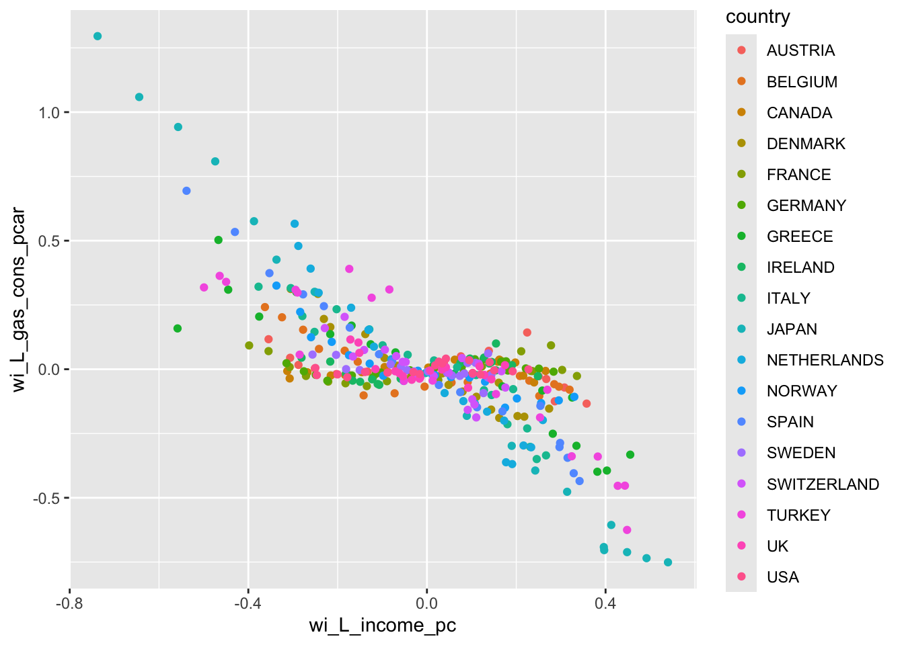

European Countries Gasoline Consumption data is obtained from Abay Mulatu 316ECN Applied Econometrics lecture material, Coventry University.
We will be using the all country sample of the gasoline demand data.
We start by loading the required libraries.
library(tidyverse)
── Attaching core tidyverse packages ──────────────────────── tidyverse 2.0.0 ──
✔ dplyr 1.1.4 ✔ readr 2.1.5
✔ forcats 1.0.0 ✔ stringr 1.5.1
✔ ggplot2 3.5.1 ✔ tibble 3.2.1
✔ lubridate 1.9.4 ✔ tidyr 1.3.1
✔ purrr 1.0.2
── Conflicts ────────────────────────────────────────── tidyverse_conflicts() ──
✖ dplyr::filter() masks stats::filter()
✖ dplyr::lag() masks stats::lag()
ℹ Use the conflicted package (<http://conflicted.r-lib.org/>) to force all conflicts to become errors
library(Hmisc) # add labels to variables
Attaching package: 'Hmisc'
The following objects are masked from 'package:dplyr':
src, summarize
The following objects are masked from 'package:base':
format.pval, units
library(ggplot2)library(dplyr) # for data manipulationlibrary(plm) # to estimate linear panel data models
Attaching package: 'plm'
The following objects are masked from 'package:dplyr':
between, lag, lead
library(fastDummies) # create dummies based on categorical (factor) variable
12.1 Least Squares Dummy Variables (LSDV) Approach
We estimated this model in the previous section using two-country sample of gasoline consumption data. We will replicate it with full sample of countries.
12.1.1 Task 1
Import the gasoline-demand-all-countries.csv data, label variables and create country dummies.
12.1.1.1 Guidance
This is a replication of what we have done in the previous section.
df <-read.csv("~/Desktop/R-workshops/assets/data/gasoline-demand-all-countries.csv", stringsAsFactors=TRUE)#View(df)# label variableslabel(df$L_gas_cons_pcar) <-"Logarithm of gasoline consumption per car"label(df$L_income_pc) <-"Logarithm of real income per capita"label(df$L_gas_price) <-"Logarithm of real gasoline price per gallon"label(df$L_cars_pc) <-"Logarithm of number of cars per capita"# create country dummies# below is what we have done before# df$italy <- ifelse(df$country == "ITALY", 1, 0)# df$denmark <- ifelse(df$country == "DENMARK", 1, 0)
Because the data now has 18 countries, I will use another approach to create the country dummies:
View(df) and you will see that country dummies are created with names country_AUSTRIA, country_BELGIUM, etc. You may remove the country_ in front of all these dummy country names and convert letters to lower case by running the following line:
Provide a scatter plot of L_gas_cons_pcar and L_income_pc. Differentiate each country data point by adding color.
ggplot(df, aes(x = L_income_pc, y = L_gas_cons_pcar, color = country)) +geom_point() +labs(x ="Log income per capita", y ="Log gasoline consumption per car",title ="Negative Relationship Between Income and Gasoline Consumption")
Estimate a Least Squares Dummy Variable Model that regresses logarithm of gasoline consumption per car (L_gas_cons_pcar) on log of income per capita (L_income_pc), log of gasoline price per gallon (L_gas_price) and number of cars per capita (L_cars_pc). Comment on the results.
12.1.3.1 Guidance
There are multiple ways of approaching data analysis. We can use the country dummies that we created above or alternatively, we can ask R to add dummies based on our country variable. I will show the latter below. Try replicating this using dummies we created in the previous task.
Least Squares Dummy Variable Estimation:
# Least Squares Dummy Variablelsdv <-lm(L_gas_cons_pcar ~ L_income_pc + L_gas_price + L_cars_pc +factor(country), data = df)summary(lsdv)
Test if the the country dummies in the LSDV model above are jointly statistically significant.
12.1.4.1 Guidance
We need to perform an F test for restrictions. The LSDV model estimated above is the unrestricted model. We may re-estimate a restricted version of it by removing the country dummies. This model is our pooled OLS.
Analysis of Variance Table
Model 1: L_gas_cons_pcar ~ L_income_pc + L_gas_price + L_cars_pc
Model 2: L_gas_cons_pcar ~ L_income_pc + L_gas_price + L_cars_pc + factor(country)
Res.Df RSS Df Sum of Sq F Pr(>F)
1 338 14.9044
2 321 2.7365 17 12.168 83.961 < 2.2e-16 ***
---
Signif. codes: 0 '***' 0.001 '**' 0.01 '*' 0.05 '.' 0.1 ' ' 1
We reject \(H_0\) . The country dummies are jointly statistically significant.
12.1.5 Task 5
Replicate the above test, this time using R’s fixed effects estimation.
plm is the function we will use to estimate a panel linear model, with the index showing our panel data cross-section and time identifiers and the model telling R which panel linear model to estimate:
# Panel Data Fixed Effects Modelfixed_1 <-plm(L_gas_cons_pcar ~ L_income_pc + L_gas_price + L_cars_pc, data = df, index =c("country", "year"), model ="within")summary(fixed_1)
Oneway (individual) effect Within Model
Call:
plm(formula = L_gas_cons_pcar ~ L_income_pc + L_gas_price + L_cars_pc,
data = df, model = "within", index = c("country", "year"))
Balanced Panel: n = 18, T = 19, N = 342
Residuals:
Min. 1st Qu. Median 3rd Qu. Max.
-0.378774 -0.039758 0.004650 0.045412 0.362856
Coefficients:
Estimate Std. Error t-value Pr(>|t|)
L_income_pc 0.662250 0.073386 9.0242 < 2.2e-16 ***
L_gas_price -0.321702 0.044099 -7.2950 2.355e-12 ***
L_cars_pc -0.640483 0.029679 -21.5804 < 2.2e-16 ***
---
Signif. codes: 0 '***' 0.001 '**' 0.01 '*' 0.05 '.' 0.1 ' ' 1
Total Sum of Squares: 17.061
Residual Sum of Squares: 2.7365
R-Squared: 0.8396
Adj. R-Squared: 0.82961
F-statistic: 560.093 on 3 and 321 DF, p-value: < 2.22e-16
Note that the slope coefficients we obtain above are the same as those we obtained in our LSDV model.
The test between Fixed Effects and Pooled OLS models
pFtest(fixed_1, pooled_ols)
F test for individual effects
data: L_gas_cons_pcar ~ L_income_pc + L_gas_price + L_cars_pc
F = 83.961, df1 = 17, df2 = 321, p-value < 2.2e-16
alternative hypothesis: significant effects
Again, note that the F-statistic reported above (83.961) is the same as what we obtained through anova() comparison.
12.1.6 Task 6
Estimate the Within-groups model manually.
12.1.6.1 Guidance
For this, we will need to regress the deviations of observations from group means using a linear model without a constant.
Let’s first create the group averages using the dplyr package
In the final step, we use these deviations in a regression without a constant term. But let us see the scatter plot of gasoline consumption per car and income per capita after this data transformation.
ggplot(df, aes(x = wi_L_income_pc, y = wi_L_gas_cons_pcar, color = country)) +geom_point()

Regression (within-groups estimation):
wg <-lm(wi_L_gas_cons_pcar ~0+ wi_L_income_pc + wi_L_gas_price + wi_L_cars_pc,data = df)summary(wg)
Call:
lm(formula = wi_L_gas_cons_pcar ~ 0 + wi_L_income_pc + wi_L_gas_price +
wi_L_cars_pc, data = df)
Residuals:
Logarithm of gasoline consumption per car
Min 1Q Median 3Q Max
-0.37877 -0.03976 0.00465 0.04541 0.36286
Coefficients:
Estimate Std. Error t value Pr(>|t|)
wi_L_income_pc 0.66225 0.07141 9.274 < 2e-16 ***
wi_L_gas_price -0.32170 0.04291 -7.497 5.77e-13 ***
wi_L_cars_pc -0.64048 0.02888 -22.177 < 2e-16 ***
---
Signif. codes: 0 '***' 0.001 '**' 0.01 '*' 0.05 '.' 0.1 ' ' 1
Residual standard error: 0.08985 on 339 degrees of freedom
Multiple R-squared: 0.8396, Adjusted R-squared: 0.8382
F-statistic: 591.5 on 3 and 339 DF, p-value: < 2.2e-16
12.1.7 Task 7
Estimate a random effects model and compare this with Pooled OLS.
To estimate a panel random effect model, we use the same panel data linear model plm() function as above, but will change the model to random.
# Panel Data Random Effects Modelrandom_1 <-plm(L_gas_cons_pcar ~ L_income_pc + L_gas_price + L_cars_pc, data = df, index =c("country", "year"), model ="random")summary(random_1)
Oneway (individual) effect Random Effect Model
(Swamy-Arora's transformation)
Call:
plm(formula = L_gas_cons_pcar ~ L_income_pc + L_gas_price + L_cars_pc,
data = df, model = "random", index = c("country", "year"))
Balanced Panel: n = 18, T = 19, N = 342
Effects:
var std.dev share
idiosyncratic 0.008525 0.092330 0.182
individual 0.038238 0.195545 0.818
theta: 0.8923
Residuals:
Min. 1st Qu. Median 3rd Qu. Max.
-0.3977058 -0.0520350 0.0050877 0.0582288 0.3763726
Coefficients:
Estimate Std. Error z-value Pr(>|z|)
(Intercept) 1.996698 0.184326 10.8324 < 2.2e-16 ***
L_income_pc 0.554986 0.059128 9.3861 < 2.2e-16 ***
L_gas_price -0.420389 0.039978 -10.5155 < 2.2e-16 ***
L_cars_pc -0.606840 0.025515 -23.7836 < 2.2e-16 ***
---
Signif. codes: 0 '***' 0.001 '**' 0.01 '*' 0.05 '.' 0.1 ' ' 1
Total Sum of Squares: 18.054
Residual Sum of Squares: 3.0817
R-Squared: 0.82931
Adj. R-Squared: 0.8278
Chisq: 1642.2 on 3 DF, p-value: < 2.22e-16
The comparison between the above the Pooled OLS is done by Breusch-Pagan LM Test.
Apply the Hausman Test to compare Random Effects and Fixed Effects Models.
phtest(fixed_1, random_1)
Hausman Test
data: L_gas_cons_pcar ~ L_income_pc + L_gas_price + L_cars_pc
chisq = 302.8, df = 3, p-value < 2.2e-16
alternative hypothesis: one model is inconsistent
The null of Random Effects is rejected. We choose the Fixed Effects.
12.1.9 Task 9
Estimate a two-way fixed effects model and test for the joint significance of the time effects.
# Panel Data Fixed Effects Modelfixed_2 <-plm(L_gas_cons_pcar ~ L_income_pc + L_gas_price + L_cars_pc +factor(year), data = df, index =c("country", "year"), model ="within")summary(fixed_2)
# fixed_1 : One-way fixed effects model (cross-section effects included)# fixed_2 : Two-way fixed effects model (cross-section and time-effects included)# Joint statistical significance of the time effectspFtest(fixed_2, fixed_1)
F test for individual effects
data: L_gas_cons_pcar ~ L_income_pc + L_gas_price + L_cars_pc + factor(year)
F = 6.2338, df1 = 18, df2 = 303, p-value = 5.36e-13
alternative hypothesis: significant effects
Time effects are jointly statistically significant. We choose the two-way FE model over one-way FE model.
Note that we can estimate the above two-way model by adding an effect = "twoways" option in R, without the need for an explicit inclusion of time dummies.
# Panel Data Fixed Effects Modelfixed_3 <-plm(L_gas_cons_pcar ~ L_income_pc + L_gas_price + L_cars_pc, data = df, index =c("country", "year"), model ="within", effect ="twoways")summary(fixed_3)
Twoways effects Within Model
Call:
plm(formula = L_gas_cons_pcar ~ L_income_pc + L_gas_price + L_cars_pc,
data = df, effect = "twoways", model = "within", index = c("country",
"year"))
Balanced Panel: n = 18, T = 19, N = 342
Residuals:
Min. 1st Qu. Median 3rd Qu. Max.
-0.41920085 -0.03886111 0.00018502 0.04199566 0.23067839
Coefficients:
Estimate Std. Error t-value Pr(>|t|)
L_income_pc 0.051369 0.091386 0.5621 0.5745
L_gas_price -0.192850 0.042860 -4.4995 9.718e-06 ***
L_cars_pc -0.593448 0.027669 -21.4479 < 2.2e-16 ***
---
Signif. codes: 0 '***' 0.001 '**' 0.01 '*' 0.05 '.' 0.1 ' ' 1
Total Sum of Squares: 10.644
Residual Sum of Squares: 1.997
R-Squared: 0.81239
Adj. R-Squared: 0.78886
F-statistic: 437.338 on 3 and 303 DF, p-value: < 2.22e-16
12.1.10 Task 10
Estimate a two-way random effects model.
# Panel Data Fixed Effects Modelrandom_2 <-plm(L_gas_cons_pcar ~ L_income_pc + L_gas_price + L_cars_pc, data = df, index =c("country", "year"), model ="random", effect ="twoways")summary(random_2)
Twoways effects Random Effect Model
(Swamy-Arora's transformation)
Call:
plm(formula = L_gas_cons_pcar ~ L_income_pc + L_gas_price + L_cars_pc,
data = df, effect = "twoways", model = "random", index = c("country",
"year"))
Balanced Panel: n = 18, T = 19, N = 342
Effects:
var std.dev share
idiosyncratic 0.006591 0.081183 0.147
individual 0.038340 0.195805 0.853
time 0.000000 0.000000 0.000
theta: 0.9053 (id) 0 (time) 0 (total)
Residuals:
Min. 1st Qu. Median 3rd Qu. Max.
-0.3956900 -0.0499700 0.0075613 0.0543043 0.3748214
Coefficients:
Estimate Std. Error z-value Pr(>|z|)
(Intercept) 2.040793 0.191508 10.6564 < 2.2e-16 ***
L_income_pc 0.564562 0.060854 9.2773 < 2.2e-16 ***
L_gas_price -0.404936 0.040369 -10.0309 < 2.2e-16 ***
L_cars_pc -0.609360 0.025970 -23.4641 < 2.2e-16 ***
---
Signif. codes: 0 '***' 0.001 '**' 0.01 '*' 0.05 '.' 0.1 ' ' 1
Total Sum of Squares: 17.829
Residual Sum of Squares: 3.0145
R-Squared: 0.83092
Adj. R-Squared: 0.82942
Chisq: 1661.05 on 3 DF, p-value: < 2.22e-16
12.1.11 Task 11
Perform a Hausman Test comparing two-way fixed and random effect models.
phtest(fixed_2, random_2)
Hausman Test
data: L_gas_cons_pcar ~ L_income_pc + L_gas_price + L_cars_pc + factor(year)
chisq = 134.07, df = 3, p-value < 2.2e-16
alternative hypothesis: one model is inconsistent
We reject the null hypothesis of random effects and choose the fixed effects model.
To sum up, we started by estimating a Pooled OLS model, followed by a fixed effects specification. We have seen alternative ways of estimating the Fixed Effects Model, i.e. the Least Squares Dummy Variable Apporoach, the Within Groups Estimator and R’s built in function plm with the argument model = "within".
We then moved on to Random Effects Model using the plm function with the argument model = "random".
The F-test comparison between the Pooled OLS and Fixed Effects Model indicated the existence of unobserved heterogeneity (time invariant country-specific effects).
The Breusch-Pagan Test was applied to compare the Pooled and Random Effects models. This test also rejected the Pooled OLS and indicated that the variation of the country-specific effects is different than zero.
A comparison between the Fixed Effects and Random Effects model through the Hausman Test rejected the null of Random Effects specification in favour of a Fixed Effects Model.
We then moved on to check existence of time-specific effects that are common to all cross-sectional units. This was done by an F-test, which this time, compared one-way and two way fixed effects specification and tested for the joint significance of the time effects.
The null of time effects being jointly equal to zero is rejected, suggesting estimation of two-way models.
A final comparison was between the Two-way Fixed Effects and Two-way Random effects models. The Hausman Test again rejected the Random Effects specification, which led us to decide on the Two-way Fixed Effects model as our final specification.